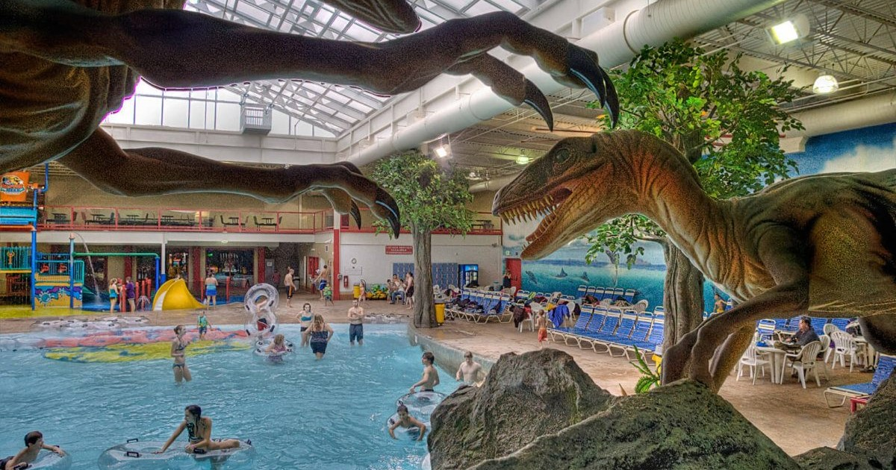
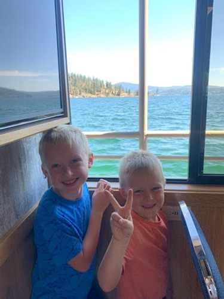
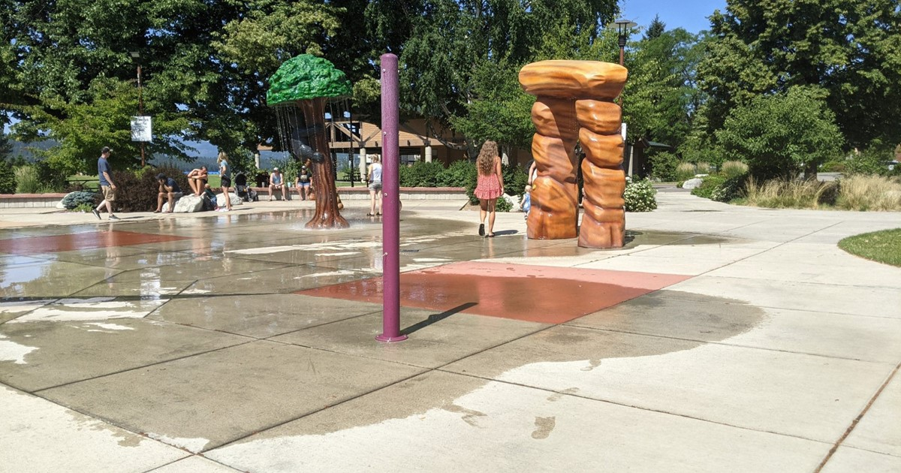
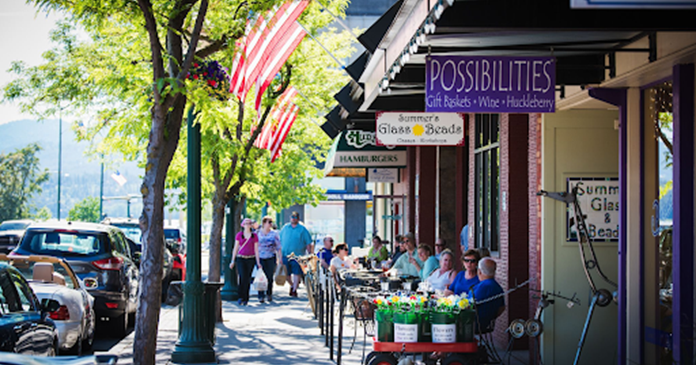
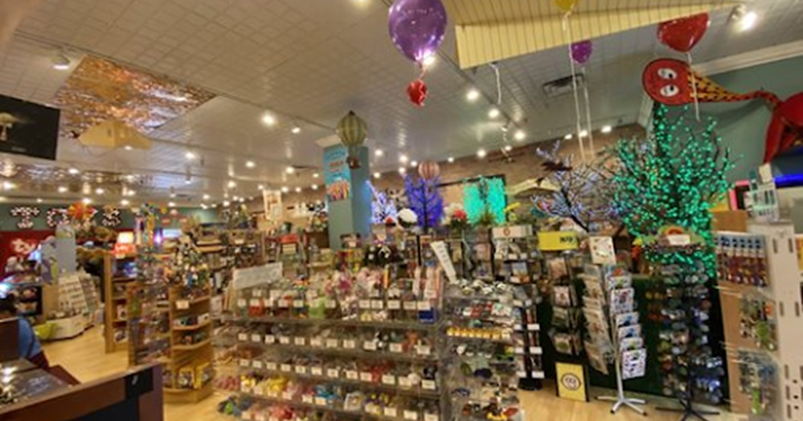
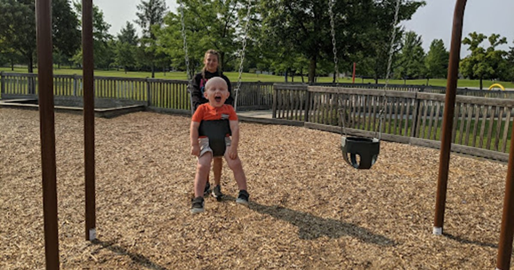
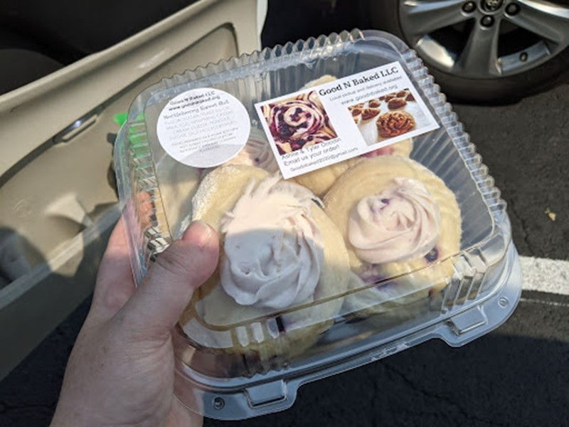
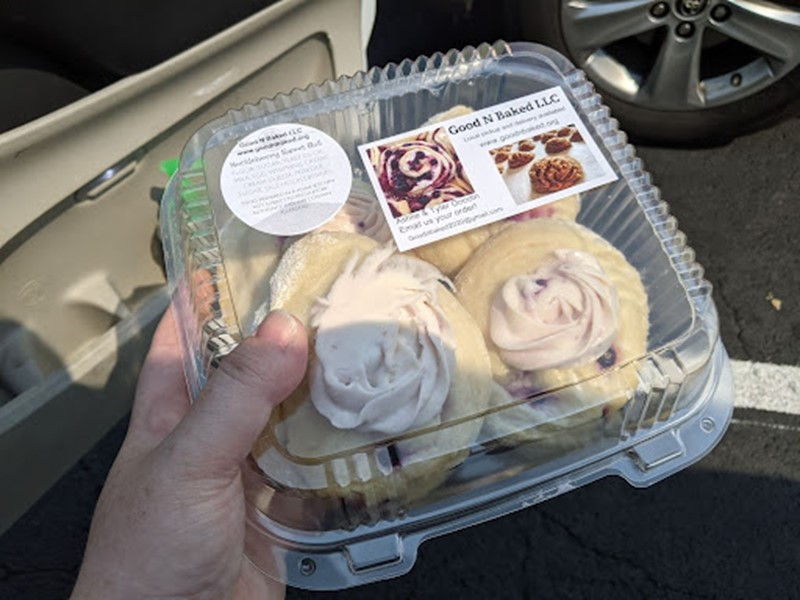

Kid-Friendly Activities to Do in Coeur D’Alene, Idaho in the Summer
I recently traveled to Coeur d’Alene, Idaho for the first time with my two teenage sisters, my second oldest sister, and her three children (all of whom are under the age of 7). We had three days to keep busy while my 16-year-old sister attended the Iron Wood Throwers Camp at Lake City High School. With three 2-3 hour blocks to fill each day, we need to find several kid-friendly activities that us adults could enjoy too.
So, if you’re planning a trip to Coeur d’Alene with small children anytime soon, here are some of the fun activities we did while we were there.
Raptor Reef Indoor Water Park
Part of the Triple Play fun park and resort in Hayden, Idaho, this water park is fun for kiddos of all ages, and their parents! And it’s relatively cost-friendly if you just get the evening pass and go for a couple hours after 6pm. We were only there for an hour and a half and we were wiped out afterwards.
This park has four large water slides for humans that are at least 42 inches tall. It starts with a climb up a couple flights of stairs (it’s really not too bad, until the 4th or 5th climb up). Then you choose which slide to go down, three are inner tube slides that you can go down with a partner and one is a single person slide that you can go down without the tube. If you’re afraid of the dark, brace yourself for the blind twists and turns as you slide down to the pool below.
There is also a wave pool and hot tub for those over the age of three. Throw life jackets on your kids and let them ride the waves. And if you have smaller children, there’s a mini park for tots under the age of three–complete with three slides, water spouts, and climbing walls.
Coeur d'Alene City Park

You can’t go to Coeur d’Alene without visiting the city park. Even if you don’t visit the cool wooden playground hidden within the trees, you need to visit the shore of Lake Coeur d’Alene and walk out on the dock.

The park is so big, there are plenty of places to just chill and have a picnic, throw around a frisbee, play on the beach of the lake, and more. If you need more structured activities to do, you can check out the carousel.
And don’t forget to get a picture with Mudgy & Millie before you leave!


Lake Coeur d'Alene Cruises

Right off the dock at the city park, you can take a lake tour with Lake Coeur d’Alene Cruises. They have several options to choose from every day of the week. Take a 90-minute cruise between meals or do a dinner or brunch cruise. Just be sure to bring your sunscreen because you’ll want to go sit on the top of the boat to take in the beauty of the lake and surrounding homes.
Oh, and don’t forget your wallet. With a full bar, food, and snacks, there are plenty of refreshments for the kids and adults to enjoy as you cruise around the lake.
We had a lot of fun checking out the cabins on the island in the middle of the lake and watching the parasailers soar through the air. After about 20 minutes, the novelty of it all does start to wear off a little for the kids, so be sure to bring some games or other forms of entertainment if you think you’ll need them.
We had a lot of fun checking out the cabins on the island in the middle of the lake and watching the parasailers soar through the air. After about 20 minutes, the novelty of it all does start to wear off a little for the kids, so be sure to bring some games or other forms of entertainment if you think you’ll need them.
McCuen Park
Get ready for all the parks in this article...is there much else that kids love more? McCuen Park is a super fun, new park with an interactive splash pad and large modern playground. So bring the swimsuits! Plus, there are several walking trails and a dog park if you’re bringing your pets along.
My nephews had so much fun running back and forth from the splash pad to the playground that they didn’t want to leave!
Fun side note: we even ran into someone here who was carrying a python around on their shoulders!

Shopping in Downtown Coeur d'Alene
If your kids are anything like my nephews, they won’t want to walk around for too long (so bring a stroller or a wagon), but downtown Coeur d’Alene is a must-see when you visit. There are tons of hot spots for food and drinks, and a bunch of cute shops (especially if you’re a big souvenir shopper like I am). There’s a fun little indoor mall with clothing boutiques, a candy shop, and a magical little toy emporium – Figpickels.
How can you go to a shopping center with kids and not hit up the toy store? Figpickels has all kinds of toys to pique any kid’s interest. They even have an adorable little library of books that feels like you walked straight into an enchanted forest. And an extra bonus, there are plenty of cute and inexpensive little toys that you can get to keep the kiddos satisfied.
Bluegrass Park

Bluegrass park was a fun stop when we just needed a break from all the driving around. It has a cute little playground and splash pad (which doesn’t turn on until 11 am). If you need a break and just want to let the kids tire themselves out for a little while, this fenced in park is super close to Lake City High School, and right in the middle of a residential area, so it’s pretty quiet and tame.
Community Market in Silver Lake Mall
Support the local vendors by shopping around at the community market inside the Silver Lake Mall. Get a break from the heat and enjoy some sweet treats and awesome handmade souvenirs like jewelry, clothing, and more!
We got some super yummy huckleberry sweet rolls that I would highly recommend if you get the chance to try them.
 

All in all, it was a quick trip, but we made the most of it and thoroughly enjoyed our time while we were there. I’m excited to be able to go back again and explore the area more with my husband to try some of the less “kid-friendly” activities.
About the Author
Kaili Killpack
Kaili is a transplant into Idaho, but fully claims the title of Idahoan. After attending Brigham Young University-Idaho where she met her husband, she moved out to southeastern Idaho from Oregon (and most of her family eventually followed her out here too). When she isn't looking for new places to hike and explore, Kaili can usually be found hanging out with her husband, family, or cats. She's also a professional writer and digital marketer by day and enjoys writing for fun on her own time as the owner of happyhealthythings.com.